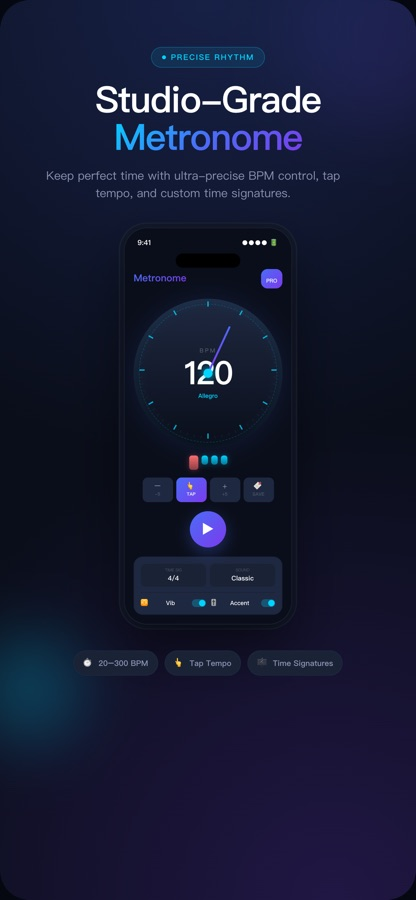
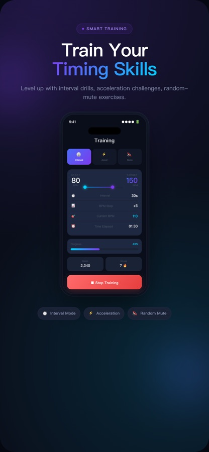
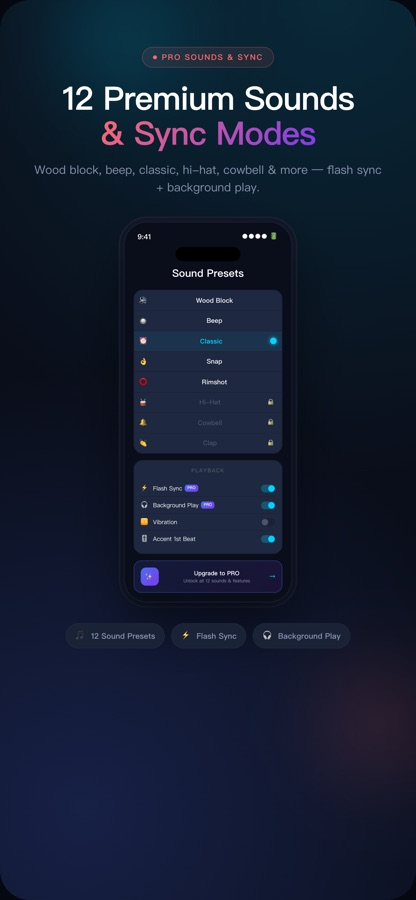

精准速度Precise tempo
20–300 BPM 细致调节，支持敲击测速与常用拍号。
Fine control from 20–300 BPM, tap tempo, and common time signatures.
精准到每一拍。从基础练习到专业排练，用可调 BPM、丰富音色、智能训练和后台播放稳住你的节奏。
Make every beat count. Adjustable BPM, rich sounds, smart drills, and background playback keep your practice perfectly in time.
一个干净、直观，又有足够深度的节拍器。
A clean, immediate metronome with room to grow.
20–300 BPM 细致调节，支持敲击测速与常用拍号。
Fine control from 20–300 BPM, tap tempo, and common time signatures.
木鱼、经典、踩镲、牛铃等音色，支持首拍重音。
Wood block, classic, hi-hat, cowbell, and more, with first-beat accents.
间隔训练、速度递增和随机静音，系统提升节奏感。
Interval drills, acceleration challenges, and random mute exercises.
开启后台播放后，返回主屏幕或锁屏仍可听到稳定节拍。
Keep an audible, steady beat when you go Home or lock the screen.
节拍指示、震动与可选闪光同步，适应更多场景。
Beat indicators, vibration, and optional flash sync adapt to your setup.
快速保存并恢复你在曲目中常用的 BPM。
Save and recall the BPM values you use most often.
深色舞台界面，让注意力回到演奏本身。
A focused dark interface keeps your attention on the music.



遇到问题、想提建议或需要购买帮助？请发邮件，并附上设备型号、iOS 版本和问题截图。
For questions, feedback, or purchase help, email us with your device model, iOS version, and a screenshot if possible.
联系支持Contact Support在“设置 → 播放”中开启“后台播放”，返回主页启动节拍器，再回到主屏幕或锁定设备。
Enable Background Play under Settings → Playback, start the metronome, then go Home or lock the device.
请检查媒体音量、已连接的蓝牙设备与当前音色。如仍无声，请强制退出应用后重新打开。
Check media volume, connected Bluetooth devices, and the selected sound. If needed, quit and reopen the app.
使用原购买 Apple ID 登录，然后前往“设置 → 恢复购买”。
Sign in with the Apple ID used for the purchase, then choose Settings → Restore Purchases.
打开 iPhone“设置”，点击你的 Apple ID，选择“订阅”后管理 Metronome。
Open iPhone Settings, tap your Apple ID, choose Subscriptions, and manage Metronome.